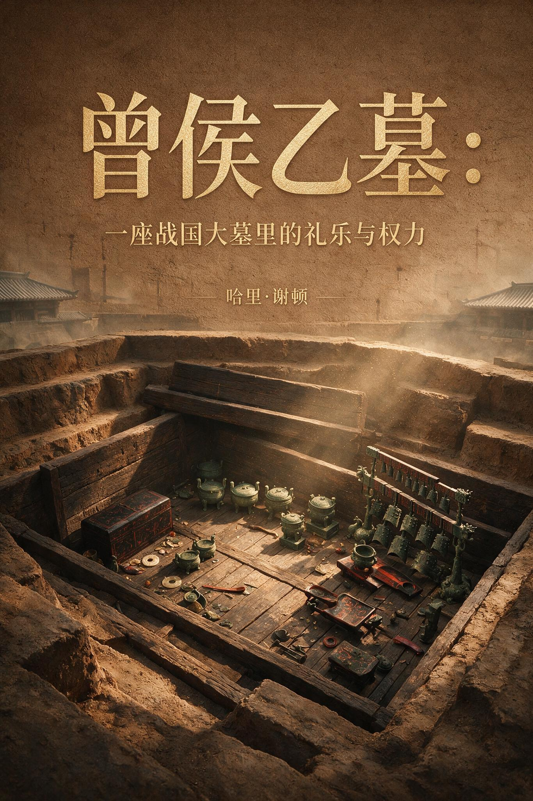

内容简介
1978年，湖北随州擂鼓墩，一座沉睡两千四百年的曾国大墓重见天日。九鼎八簋、六十五件编钟、成组漆木器与大量铭文，将战国早期的礼乐秩序与权力博弈凝固在泥土之下。编钟音律精确，青铜纹饰繁复，漆器却暗含楚风——曾国在强楚之侧，用最精密的工艺与最郑重的仪典，筑起一道文化防线。本书从墓葬空间、器物组合与铭文细节入手，还原一场以青铜、丝竹与漆彩写就的政治宣言。
热门划线
精彩点评
读完这本书，写下你的点评 →目录
共 30 章第 01 章随枣走廊的十字路口第 02 章擂鼓墩的偶然与必然第 03 章椁室里的空间政治第 04 章钟架上的礼乐密码第 05 章铭文里的双重效忠第 06 章漆木之下的楚风暗涌第 07 章铜灶里的火候第 08 章一坑牛骨的政治账第 09 章衣箱里的天象第 10 章戈戟丛中的技术选择第 11 章车马坑里的仪仗逻辑第 12 章水器里的宴饮政治第 13 章纹饰的语法第 14 章铭文书风里的正统焦虑第 15 章漆画里的另一个曾国第 16 章玉器里的减法美学第 17 章丝织纹样的消逝与重现第 18 章审美体系的裂缝第 19 章鼎簋之间的名分第 20 章一镈之赠的邦交术第 21 章模范背后的工官第 22 章陪葬席上的少女第 23 章口琀握玉的丧仪第 24 章曾国权力的退场第 25 章无名古冢的两千年第 26 章从泥土到编号的旅途第 27 章编钟重新发声第 28 章展柜中的外交叙事第 29 章考古场上的解释拉锯第 30 章擂鼓墩的回声